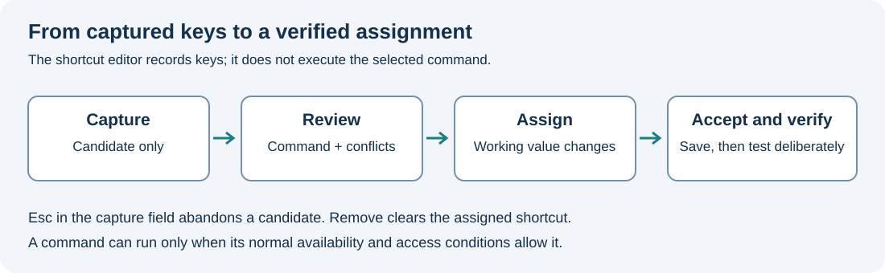

RADONIX · ROUTERXYZAC+RTCP · CHAPTER 24
Operator Manual · English · 9 October 2026
Keyboard Shortcuts
Use an assigned key combination deliberately, understand when it can operate, and change assignments without confusing a draft with an active shortcut.
Expanded draft for review. Default keys describe the supplied application. Check the saved assignments on your machine before use.
24.1 Understand what a shortcut does before pressing it
A keyboard shortcut is a key, or a combination of keys, assigned to an application command. It provides another way to request that command. For example, an assigned shortcut can open a diagnostic window without first finding its on-screen button. A shortcut assigned to a movement command can request movement, so knowing the key combination is only part of knowing how to use it.
The command keeps its normal access and operating restrictions. A shortcut does not bypass a missing connection, a machine-readiness requirement or a permission restriction. If the corresponding command is unavailable, pressing its shortcut is not a method of forcing it to run. Check the command and the machine condition rather than pressing the keys repeatedly.
Read the plus signs as “hold together”
In Ctrl+Shift+Alt+P, hold Ctrl, Shift and Alt, then press P. The plus signs separate the key names; you do not press the plus key. Ctrl, Shift and Alt are modifier keys: they change which combination the application receives. A modifier by itself is not a complete shortcut. For a one-time command, release the keys after the press.
The application matches the whole combination. An extra modifier can make it different from the saved assignment. For example, Ctrl+P and Ctrl+Shift+P are different shortcuts. The displayed spelling puts modifiers in a consistent order, but you should think of them as keys held together rather than a sequence to type into a text box.
| Question | What to check |
|---|---|
| Which command? | Read the command name and understand whether it opens a window, changes a mode or requests machine action. |
| Which saved keys? | Read the actual assignment on this machine; defaults and remembered keys may differ. |
| What operating condition? | Confirm the main window is active and the requested action is appropriate and available. |
Shortcuts belong to the active main window
These application shortcuts operate while the RouterXYZAC+RTCP main form is the active window. They are not system-wide keys that control the machine while you work in another application. Opening Configuration, a separate editor or another window can move keyboard attention away from the main form. The keys used inside that window may have its own meaning instead.
Do not rely on a remembered shortcut as an emergency-stop device. Its operation depends on the application, the active window and the assigned command. Follow the machine's established stopping and emergency procedures. For normal work, learn the on-screen controls first, then add shortcuts to actions you already understand. This keeps a convenient key from becoming an unexplained machine instruction.
24.2 Read the default-key reference and the current machine assignments
Open Configuration and select the top-level Keyboard group to inspect assignments. This group is separate from Controller → PLC → Mapping: keyboard assignments connect keys to application commands, whereas I/O mapping connects machine signals to channels. Changing one does not change the other.
The Keyboard group contains an Enabled setting and entries named after commands. Enabled starts On in the supplied configuration. Turning it Off disables this application's shortcut routing while retaining the assignments. It does not disable the computer's entire keyboard, remove Windows keys or prevent normal text entry in editors. It is also not a machine stop command.
Supplied combinations
The following commands have explicit default combinations in the reviewed application. All use Ctrl, Shift and Alt together with one final key. The names in the middle column are the command names shown in the Keyboard settings, even where the window or toolbar uses a friendlier title. Existing saved assignments can replace these defaults.
| Default combination | Configuration command | Purpose |
|---|---|---|
| Ctrl+Shift+Alt+C | Clear Tool Path | Clear idle TP0 and its 3D path; does not delete the source file. |
| Ctrl+Shift+Alt+Space | ChangeMode | Request the application mode change; review Chapter 20 before using it. |
| Ctrl+Shift+Alt+N | SelectStartLine | Open selected-start-line interaction; see Chapter 18. |
| Ctrl+Shift+Alt+E | EditGCode | Open G-code editing; see Chapter 19. |
| Ctrl+Shift+Alt+PrintScreen | OpenReportFile | Open the report. |
| Ctrl+Shift+Alt+Delete | OpenIoDiagnostics | Open I/O diagnostics. |
| Ctrl+Shift+Alt+P | OpenPlcPrograms | Open the PLC programs window. |
| Ctrl+Shift+Alt+V | OpenAxisVelocity | Open the axis-velocity window. |
| Ctrl+Shift+Alt+J | OpenCycleTiming | Open Jitter / EtherCAT health. |
| Ctrl+Shift+Alt+M | OpenPlcMemory | Open the PLC memory window. |
Availability still depends on the command and the environment. In particular, do not practice the mode-change combination merely to see whether the keyboard works. Changing the operating mode is a deliberate machine operation, not a harmless display preference. Likewise, opening a program editor does not authorize changes to its contents.
None is a deliberate absence of a shortcut
Do not assume that the arrow keys jog the machine, Space stops it, or a function key starts a cycle. Those actions require an actual assignment in this application. A blank capture field or None value does not mean the command itself is missing; the ordinary on-screen operation remains subject to its normal conditions.
When taking over another shift or another machine, check the saved entries that you intend to use. A printed default table is a learning aid, while the current settings are the record of what the application will match. Keep any local quick-reference card dated and update it whenever an approved assignment changes.
24.3 Capture, assign, remove and save a shortcut
Change an assignment only when you have time to inspect and verify it. Prepare the command name, the desired combination and the old assignment before opening the editor. If the command can move the machine or change its mode, agree the choice and test conditions with the person responsible for operation. Familiarity is valuable: avoid changing several operators' established keys without a clear handover.
Capture a candidate first
- Open Configuration, expand Keyboard and select the intended command.
- Click the field below Press a shortcut key combination: so that it receives keyboard input.
- Hold the desired modifier keys and press the final key. Release the keys after the combination appears.
- Read the displayed combination and status message. Check the selected command name again.
- If the editor reports that the combination is available, select Assign to apply it to that command.
The capture field is not an ordinary text box. It records the keys you press; you do not type the letters C, t, r, l and plus signs to describe a combination. Merely seeing a captured combination does not mean it has been assigned. The editor explicitly separates the candidate from the currently assigned value.
| Action | Effect |
|---|---|
| Press a combination in the capture field | Creates a candidate; does not execute the command or assign it. |
| Assign | Applies an available candidate after access and conflict checks. |
| Remove | Sets this command's assignment to None; does not delete the command. |
| Unmodified Esc in the capture field | Reloads the currently assigned value, discarding the unassigned candidate. |
| Tab or Shift+Tab in the capture field | Moves keyboard focus rather than capturing a plain Tab shortcut. |
Read why Assign is unavailable
Assign is unavailable if no usable candidate exists, the candidate is already assigned to this command, an error or conflict remains, or your access does not permit editing. Pressing only Ctrl, Shift or Alt does not create a complete candidate. If the text says the shortcut is currently assigned, another click on Assign is unnecessary.
Remove acts on the current assignment, not just on an unassigned draft in the capture box. After selecting Remove, read the command's value again. If your purpose was only to abandon a trial combination, use Esc in the capture field instead. The normal editor reserves unmodified Esc for that reset action, so it is not a suitable choice to capture there.
Accept the Configuration changes deliberately
Assign changes the working assignment immediately; it is not only a preview for the final Configuration button. The editor itself does not run the command. Use the normal Configuration acceptance workflow in Chapter 21 to retain the changes. If you cancel ordinary tracked dialog edits, inspect the assignment afterward to confirm the restored value. Cancelling settings cannot undo a command that was already executed outside the dialog.
SCREENSHOT TO INSERT · FIGURE 24-1
Shortcut capture and explicit assignment
Capture Configuration with Keyboard expanded and one non-motion command selected. Include the command name, capture field, status explanation, Assign and Remove buttons. Show an available candidate before assignment and label it as a draft.
Suggested asset: assets/images/24-shortcut-editor.png
24.4 Resolve duplicate assignments and understand status messages
A shortcut must identify one command unambiguously. If the same combination is assigned to two commands, the application cannot use it as a reliable instruction. The editor checks the candidate against the other saved assignments and explains the conflict. Read the other command's name before deciding what to change.
For example, suppose you capture a combination already used for OpenReportFile while editing another command. The combination has not yet moved to the new command. Assign is blocked by the conflict. The correct response is to keep the old assignment and choose a different available combination, or deliberately remove the old assignment first if a reassignment has been approved.
Moving a combination between commands
- Record the original command and combination.
- Decide whether the original command should receive another combination or remain unassigned.
- Select the original entry and use Remove to release its assignment.
- Select the intended destination command, capture the combination and read the updated status.
- Use Assign only when the conflict is resolved, then review both entries before accepting Configuration.
Do not remove an unfamiliar assignment just to make the error disappear. Another operator may rely on it. A change to a Run, Reset, homing or jogging assignment needs particular clarity in the handover record. A conflict message is useful information about the existing setup, not merely an obstacle to dismiss.
| Message or condition | Meaning | Operator response |
|---|---|---|
| No shortcut key is selected. | The capture candidate is empty. | Capture a full combination if an assignment is intended. |
| This shortcut is currently assigned. | The displayed candidate matches this command's assignment. | No reassignment is needed. |
| Available. Select Assign to apply this shortcut. | The candidate can be submitted. | Check the command name, then select Assign. |
| Already assigned to another command | The candidate duplicates an existing combination. | Choose another combination or perform an approved transfer. |
| Keyboard shortcuts are disabled. | The group Enabled setting is Off. | Assignments are retained; review whether enabling is intended. |
| Invalid or duplicated shortcuts | At least one entry requires correction. | Inspect individual explanations; disabling the group is not a correction. |
The application also validates the complete assignment list. If a duplicate exists, pressing that combination does not arbitrarily choose one of the commands: the conflicting combination is consumed without executing either. Other unique assignments are not described by that particular conflict. Do not use the fact that another shortcut works as evidence that the whole list is correct.
Turning Keyboard Enabled off leaves validation information attached to individual entries. A disabled group can still contain invalid assignments that must be corrected before Configuration validation succeeds. Re-enabling does not select a winner for a duplicate. Resolve the conflicting entries and review the final list while the machine is in a suitable condition.
A valid application assignment is not a promise that every keyboard, operating-system setting or other program will deliver that key combination. If an apparently valid shortcut does not arrive, use the normal on-screen control and investigate the input conditions. Avoid responding by repeatedly assigning more aggressive machine commands to simpler keys.
24.5 Distinguish one-time commands from held jogging keys
Two shortcuts can look similar in Configuration but behave differently when held. An ordinary command runs once on the initial key press. A held interaction begins on the press and receives an end request when the relevant key is released. The meaning of that interaction also depends on the current jogging mode.
Holding a key does not repeatedly execute the command at the keyboard's automatic repeat rate. To request another one-time operation, release and make another deliberate press when the machine is ready. This matters for step jogging: holding the key is not a method of requesting an endless stream of steps.
| Operation | Initial press | Release |
|---|---|---|
| Open a window or execute an ordinary command | Requests the command once, subject to availability. | Does not undo or cancel the command already requested. |
| Directional jog in continuous mode | Begins the permitted jog interaction. | Ends this held interaction and requests the applicable jog stop when no other active source holds it. |
| Directional jog in step mode | Requests the configured step. | Does not cancel the accepted one-shot step. |
| GoTo axis-position command | Requests the configured destination, subject to readiness. | Does not cancel the accepted position move. |
A modifier release can end a held interaction
If a continuous jog has been assigned Ctrl plus another key, releasing either the main key or the required Ctrl modifier ends that keyboard interaction. The same principle applies to required Shift and Alt modifiers. Press and release deliberately; do not try to change direction by leaving part of one combination held while assembling another.
The shortcut system also releases held interactions when the main window loses activation, when the relevant shortcut is changed, when shortcut routing is disabled, or when the owner closes. Loss of command availability can release an active interaction as well. These mechanisms balance the keyboard interaction; they are not a guarantee of an instantaneous physical stop or a substitute for observing the machine.
Why release is not a universal stop
Step and position moves are intentionally different from continuous jogging. Once accepted, their movement is not cancelled simply by letting go of the key. Homing and program-running commands also have their own operation and stopping procedures. If you need to stop one of these operations, use the appropriate stopping control described in the relevant chapter.
There can also be more than one active control source for the same continuous jog command. The application tracks these sources. Releasing one source does not necessarily stop the jog while another source still holds it. Avoid simultaneously using a keyboard shortcut and an on-screen held jogging control for the same action.
Before trying a jogging shortcut, read Chapter 7 and confirm the selected jog mode, direction, speed and step size. Position commands additionally require review of the intended destination. A key assignment identifies the command; it does not display every movement parameter at the moment you press it. This is why learning the machine's movement controls comes before learning faster ways to request them.
After any unexpected focus change or interrupted keyboard interaction, release all relevant keys, inspect the machine state and make a fresh deliberate request only when appropriate. Do not assume that returning focus to the main window while a key is still held will constitute a clean new command.
24.6 Verify an assignment and troubleshoot without trial movement
After an approved change, review the saved value before trying the key. Start with a non-motion command when learning the editor or checking keyboard input. Opening the report is a useful example because its purpose is clear and it does not request axis movement. Check the current assignment first; do not assume the printed default remains in force.
A controlled first check
- Accept the intended Configuration changes and return to the main window.
- Make sure the main window is active and release any keys left held from editing.
- Press the reviewed combination once, then release it.
- Observe whether the intended window or action appears. If another window becomes active, remember that the main-window shortcuts no longer have the same routing conditions.
- Return to Configuration if needed and compare the actual assignment with your record.
A successful non-motion check confirms only that this combination and command worked under those conditions. It does not commission a jogging shortcut, validate a homing procedure or prove that every keyboard combination reaches the application. Motion shortcuts need the relevant operating procedure, machine clearance, selected parameters and responsible supervision.

| Observation | Check first | Next action |
|---|---|---|
| Nothing happens | Main-window activation, Keyboard Enabled, exact assignment and command availability. | Use the normal on-screen route; inspect the reason before retrying. |
| Candidate appears but old keys still apply | Whether Assign was selected and Configuration changes were retained. | Review the assigned value rather than only the capture field. |
| Assign is unavailable | Conflict, access, empty candidate or already-assigned status. | Read the explanation and resolve that condition. |
| Holding does not repeat a step | Step mode and repeat suppression. | Release, inspect the completed movement and request a new step deliberately. |
| Movement continues after release | Whether it is a one-shot move or another source still holds a jog. | Use the appropriate stopping procedure and investigate; do not test more combinations. |
| Keys work on one machine but not another | Saved assignments, enabled state, active window and input environment. | Compare the actual settings, not just the software default table. |
Keep the local key reference useful
Record the exact command name, combination, reason for the change and verification result. If a combination was transferred, record the former command as well. For jogging, include the fact that the directional shortcut follows the current jog mode, and avoid describing it simply as “hold to move” without that qualification.
When reporting an issue, state what window was active, what keys you pressed, whether the keys were held or tapped, the current assignment and whether the same command was available on screen. For a movement issue, also state the jog mode and actual observed motion. These facts help distinguish assignment, focus, command-readiness and machine-response problems.
Before returning the workstation to another operator, ensure the approved assignments and Enabled state are retained, remove obsolete printed instructions and explain any changed keys. The best shortcut arrangement is one operators can read, verify and use consistently. Leave commands unassigned when there is no clear operating need for a key combination.